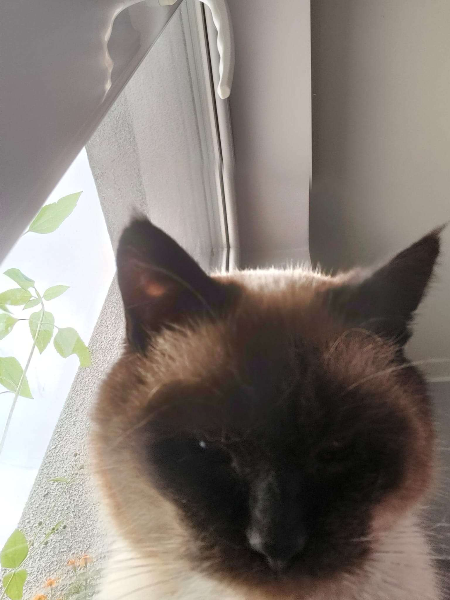
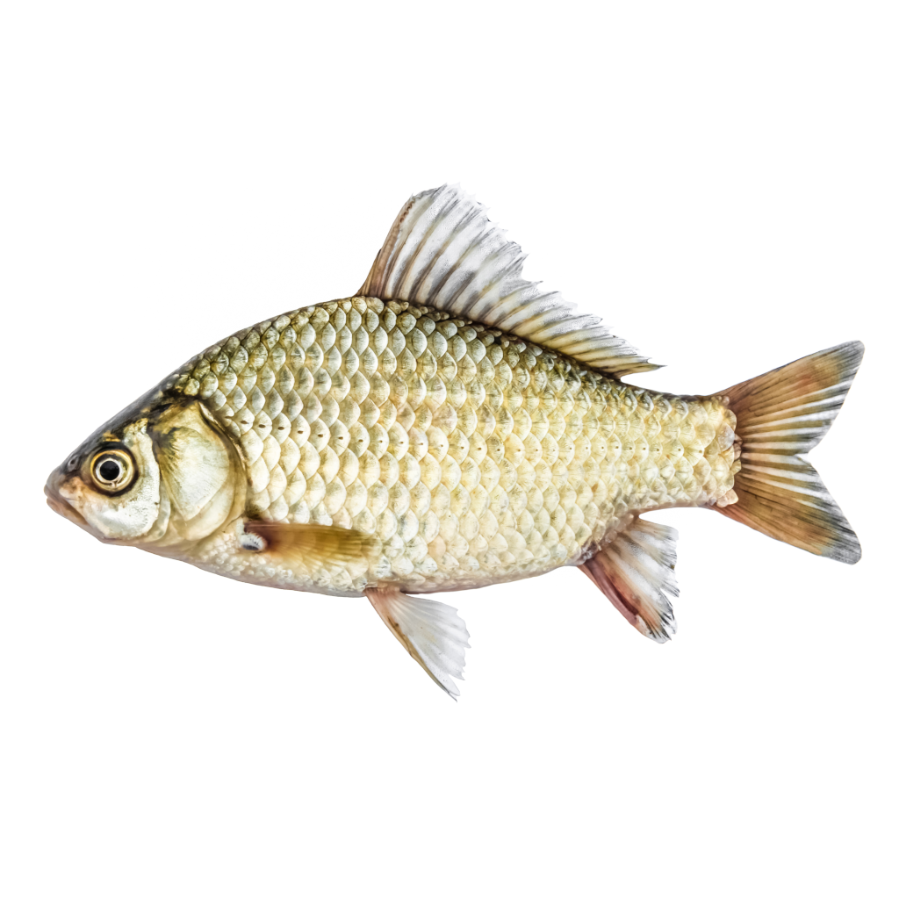

Kot Bourbon

Burbon albo bourbon – whiskey amerykańska, produkowana z kukurydzy i innych zbóż (żyto, słodowany jęczmień). Zawartość kukurydzy wynosi min. 51% (najczęściej ok. 70%). Burbon jest leżakowany w świeżych beczkach dębowych, co nadaje mu charakterystyczny smak. Produkowany jest od XVIII wieku.
Mail do kota tutaj
Zapraszam do obejrzenia wspaniałego filmu polskiego autorstwa -->
